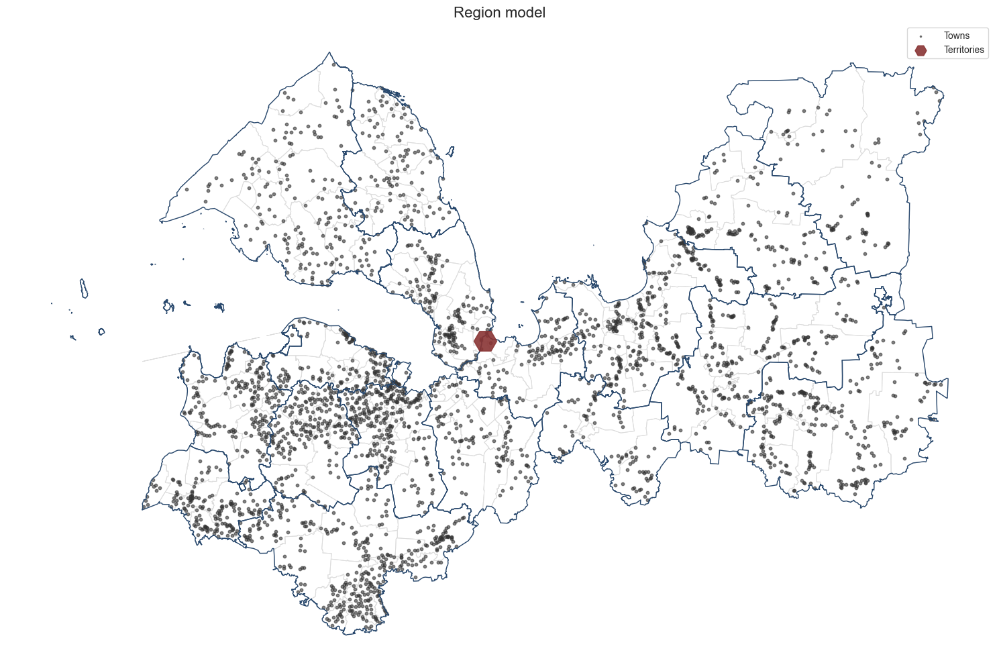

[22]:
# import osmnx as ox
import pandas as pd
import geopandas as gpd
import networkx as nx
import warnings
import sys
import os
warnings.filterwarnings("ignore")
sys.stderr = open(os.devnull, 'w')
# local crs
local_crs = 32636
# path to data
Препроцессинг данных
[32]:
graph = nx.read_graphml('data/graph.graphml')
graph_crs = graph.graph['crs']
okrugs = gpd.read_parquet('data/model_data/okrugs.parquet')
rayons = gpd.read_parquet('data/model_data/rayons.parquet')
territories = gpd.read_file('data/territories/shlis.geojson').to_crs(graph_crs)
towns = gpd.read_parquet('/Users/mvin/Code/PopFrame/examples/data/model_data/towns.parquet').to_crs(graph_crs)
[33]:
from popframe.preprocessing.level_filler import LevelFiller
level_filler = LevelFiller(towns=towns)
towns = level_filler.fill_levels()
towns
[33]:
| geometry | name | population | level | |
|---|---|---|---|---|
| 0 | POINT (543142.339 6580637.744) | Болото | 111 | Малое сельское поселение |
| 1 | POINT (544532.929 6593228.214) | Большой Остров | 116 | Малое сельское поселение |
| 2 | POINT (544895.402 6593052.876) | Бор | 116 | Малое сельское поселение |
| 3 | POINT (543993.111 6589582.121) | Бороватое | 114 | Малое сельское поселение |
| 4 | POINT (538540.110 6576793.684) | Бочево | 108 | Малое сельское поселение |
| ... | ... | ... | ... | ... |
| 2926 | POINT (399059.742 6560341.471) | Апраксин Бор | 96 | Малое сельское поселение |
| 2927 | POINT (403967.171 6562087.081) | Александровка | 98 | Малое сельское поселение |
| 2928 | POINT (413116.740 6573793.279) | Большая Горка | 100 | Малое сельское поселение |
| 2929 | POINT (412458.032 6574811.307) | Дроздово | 101 | Малое сельское поселение |
| 2930 | POINT (412158.909 6574630.200) | Большая Кунесть | 101 | Малое сельское поселение |
2931 rows × 4 columns
[24]:
from popframe.preprocessing.adjacency_calculator import AdjacencyCalculator
try:
adj_mx = pd.read_pickle('data/adj_mx.pkl')
except:
from popframe.preprocessing.adjacency_calculator import AdjacencyCalculator
blocks = towns.copy()
blocks.geometry = blocks.geometry.buffer(0.01)
ac = AdjacencyCalculator(blocks=blocks, graph=graph)
adj_mx = ac.get_dataframe()
Создание модели
[35]:
territories = gpd.read_file('data/territories/shlis.geojson').to_crs(graph_crs)
territories['name'].fillna('', inplace=True)
[36]:
from popframe.models.region import Region
region = Region(
towns=towns,
settlements=okrugs,
districts=rayons,
accessibility_matrix=adj_mx,
territories=territories
)
[37]:
region.plot()

[14]:
region.get_towns_gdf()
[14]:
| id | name | population | level | geometry | settlement_name | district_name | |
|---|---|---|---|---|---|---|---|
| 0 | 0 | Болото | 111 | Малое сельское поселение | POINT (543142.339 6580637.744) | Борское сельское поселение | Бокситогорский муниципальный район |
| 1 | 1 | Большой Остров | 116 | Малое сельское поселение | POINT (544532.929 6593228.214) | Борское сельское поселение | Бокситогорский муниципальный район |
| 2 | 2 | Бор | 116 | Малое сельское поселение | POINT (544895.402 6593052.876) | Борское сельское поселение | Бокситогорский муниципальный район |
| 3 | 3 | Бороватое | 114 | Малое сельское поселение | POINT (543993.111 6589582.121) | Борское сельское поселение | Бокситогорский муниципальный район |
| 4 | 4 | Бочево | 108 | Малое сельское поселение | POINT (538540.110 6576793.684) | Борское сельское поселение | Бокситогорский муниципальный район |
| ... | ... | ... | ... | ... | ... | ... | ... |
| 2926 | 2926 | Апраксин Бор | 96 | Малое сельское поселение | POINT (399059.742 6560341.471) | Трубникоборское сельское поселение | Тоснненский муниципальный район |
| 2927 | 2927 | Александровка | 98 | Малое сельское поселение | POINT (403967.171 6562087.081) | Трубникоборское сельское поселение | Тоснненский муниципальный район |
| 2928 | 2928 | Большая Горка | 100 | Малое сельское поселение | POINT (413116.740 6573793.279) | Трубникоборское сельское поселение | Тоснненский муниципальный район |
| 2929 | 2929 | Дроздово | 101 | Малое сельское поселение | POINT (412458.032 6574811.307) | Трубникоборское сельское поселение | Тоснненский муниципальный район |
| 2930 | 2930 | Большая Кунесть | 101 | Малое сельское поселение | POINT (412158.909 6574630.200) | Трубникоборское сельское поселение | Тоснненский муниципальный район |
2931 rows × 7 columns
[38]:
# region.to_pickle('Ленинградская область3.pickle')
Работа с моделью - Создание каркаса
[17]:
from popframe.method.popuation_frame import PopFrame
from popframe.models.region import Region
[29]:
# Создание экземпляра GraphMethod с данными
region_model = Region.from_pickle('/Users/mvin/Code/PopFrame/examples/data/data_models/Ленинградская область.pickle')
frame_method = PopFrame(region=region_model)
# Получение графа
G = frame_method.build_network_frame()
[30]:
num_edges = G.number_of_edges()
print("Количество рёбер в графе:", num_edges)
Количество рёбер в графе: 2930
[ ]:
# G.nodes(data=True)
[ ]:
# G.edges(data=True)
[20]:
gdf_frame = frame_method.save_graph_to_geojson(G, None)
gdf_frame
[20]:
| geometry | name | level | population | |
|---|---|---|---|---|
| 0 | POINT (33.75892 59.36227) | Болото | Малое сельское поселение | 111.0 |
| 1 | POINT (33.78600 59.47518) | Большой Остров | Малое сельское поселение | 116.0 |
| 2 | POINT (33.79236 59.47356) | Бор | Малое сельское поселение | 116.0 |
| 3 | POINT (33.77572 59.44249) | Бороватое | Малое сельское поселение | 114.0 |
| 4 | POINT (33.67728 59.32820) | Бочево | Малое сельское поселение | 108.0 |
| ... | ... | ... | ... | ... |
| 5856 | LINESTRING (30.60534 59.49722, 30.58271 59.48439) | NaN | Малое сельское поселение | NaN |
| 5857 | LINESTRING (30.52914 59.66430, 30.54176 59.63431) | NaN | Среднее сельское поселение | NaN |
| 5858 | LINESTRING (30.52914 59.66430, 30.50370 59.63608) | NaN | Среднее сельское поселение | NaN |
| 5859 | LINESTRING (30.52914 59.66430, 30.50283 59.68264) | NaN | Среднее сельское поселение | NaN |
| 5860 | LINESTRING (30.52914 59.66430, 30.54457 59.69124) | NaN | Крупное сельское поселение | NaN |
5861 rows × 4 columns
[18]:
# gdf_frame = frame_method.save_graph_to_geojson(G, 'karkas_graph_Moscow_obl.geojson')
# gdf_frame
Graph successfully saved to karkas_graph_Moscow_obl.geojson with all node attributes.
[31]:
frame_method.get_graph_html(G, 'final_graph_with_legend.html')
Кракас населения - версия 2
[ ]:
from popframe.method.popuation_frame import PopFrame
from popframe.models.region import Region
region_model = Region.from_pickle('/Users/mvin/Code/PopFrame/examples/data/data_models/Москва.pickle')
[ ]:
visualizer = PopFrame(region=region_model)
output = visualizer.build_circle_frame(output_type='html') # or 'gdf'
output
'HTML map saved as final_circle.html'
[ ]:
from popframe.method.popuation_frame import PopFrame
visualizer = PopFrame(region=region_model)
output = visualizer.build_circle_frame(output_type='gdf') # or 'gdf'
output
| id | name | population | level | geometry | settlement_name | district_name | |
|---|---|---|---|---|---|---|---|
| 0 | 0 | Серебряные Пруды | 9358 | Малый город | POLYGON ((38.73204 54.46798, 38.73199 54.46703... | Московская область | Серебряные Пруды |
| 1 | 1 | Узуново | 3417 | Крупное сельское поселение | POLYGON ((38.62418 54.54061, 38.62415 54.54004... | Московская область | Серебряные Пруды |
| 2 | 2 | Благодать | 52 | Малое сельское поселение | POLYGON ((38.63076 54.47175, 38.63075 54.47161... | Московская область | Серебряные Пруды |
| 3 | 3 | Ступино | 66463 | Средний город | POLYGON ((38.10304 54.88660, 38.10292 54.88407... | Московская область | Ступино |
| 4 | 4 | Кашира | 39929 | Малый город | POLYGON ((38.17049 54.83745, 38.17040 54.83549... | Московская область | Кашира |
| ... | ... | ... | ... | ... | ... | ... | ... |
| 2860 | 2860 | Шелгуново | 9 | Малое сельское поселение | POLYGON ((35.60876 56.37178, 35.60876 56.37173... | Московская область | Лотошино |
| 2861 | 2861 | Мазлово | 2 | Малое сельское поселение | POLYGON ((35.68795 56.36313, 35.68794 56.36310... | Московская область | Лотошино |
| 2862 | 2862 | Себудово | 2 | Малое сельское поселение | POLYGON ((35.52223 56.37250, 35.52223 56.37247... | Московская область | Лотошино |
| 2863 | 2863 | Введенское | 694 | Среднее сельское поселение | POLYGON ((35.64112 56.37377, 35.64109 56.37325... | Московская область | Лотошино |
| 2864 | 2864 | Новолотошино | 1067 | Большое сельское поселение | POLYGON ((35.65710 56.24687, 35.65707 56.24623... | Московская область | Лотошино |
2865 rows × 7 columns